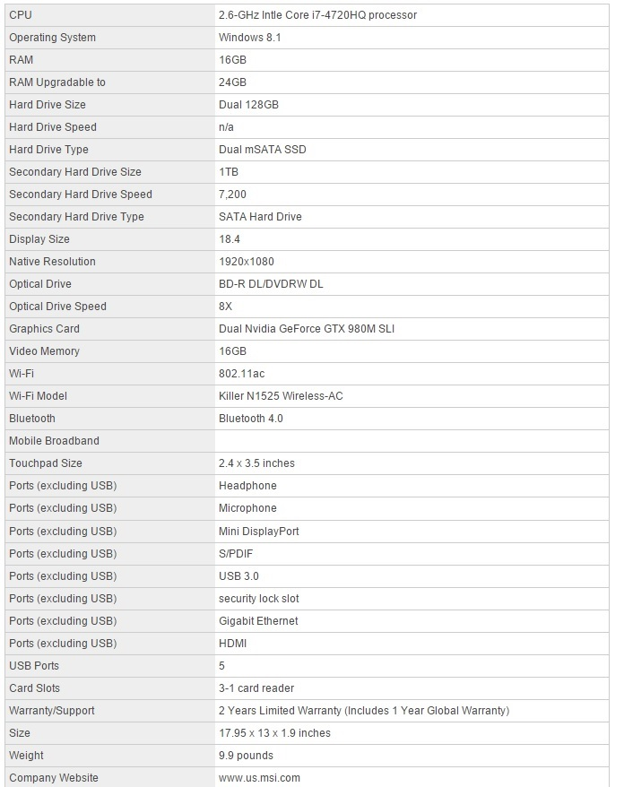
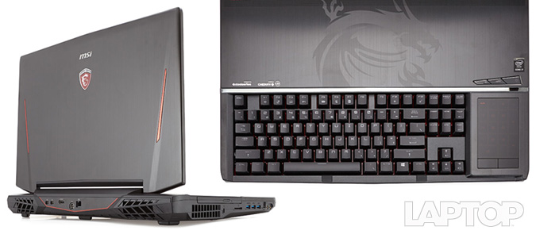
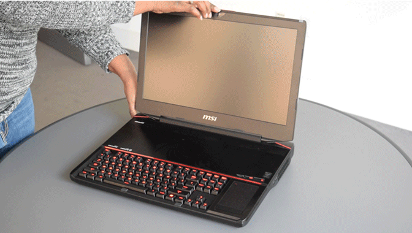
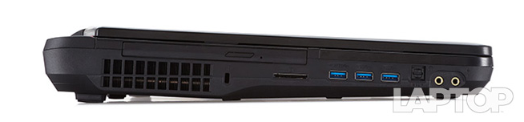
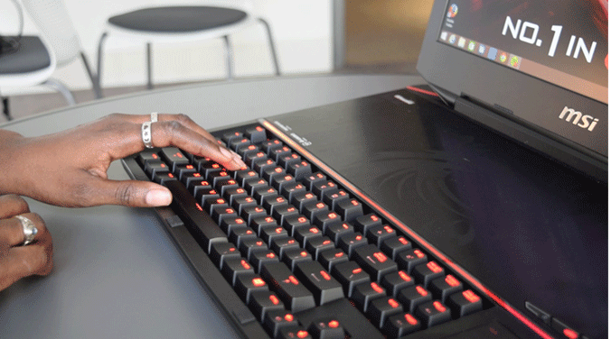
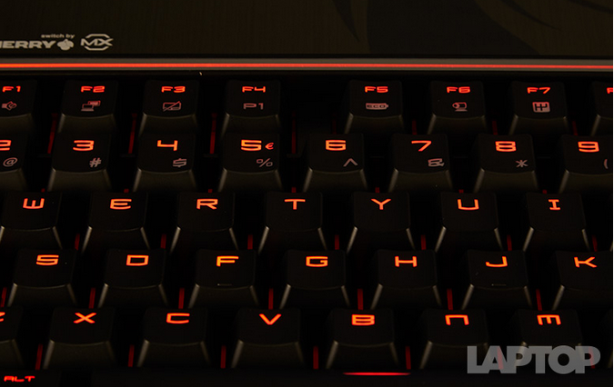
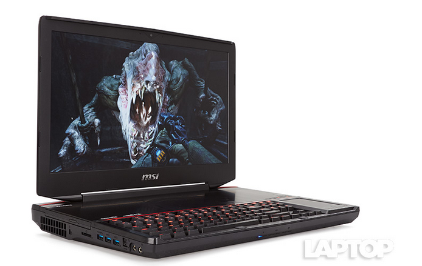
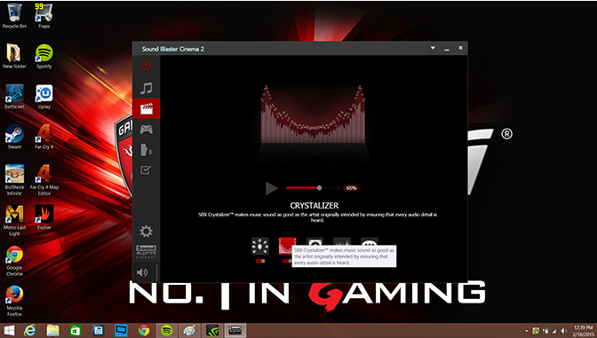

Laptop Lounge
MSI GT80 Titan SLI

Editor's Rating:
The Pros
Elegant, yet imposing design; Comfortable mechanical keyboard; Bright, vibrant display; Digital touchpad transforms into number pad; Removable top panel lets you upgrade components
The Cons
Poor battery life, even for a gaming notebook; Speakers could use more bass.
Verdict
With its face-melting performance, a fantastic mechanical keyboard and upgrade-friendly chassis, the MSI GT80 Titan SLI is the gaming laptop to beat.
Specifications
Design
The Titan is a literal head turner. I had at least three co-workers stop when they passed by to comment on the beautiful behemoth that had taken up residence on my desk. But MSI knows that big is beautiful and created a laptop that is simultaneously graceful and imposing.
The laptop's black brushed-aluminum lid is extremely elegant. I love the pair of bright red chrome darts that play up car hood comparisons. The red backlit Gaming Series emblem and MSI logo also add a nice touch of understated bling.
The Titan's rear and undercarriage are constructed from black magnesium alloy. The vents, designed to look like the rear end of a powerful muscle car, gave me visions of racing on a closed track at breakneck speed.
Make no mistake, the Titan is freaking huge. The 9.9-pound, 17.95 x 13 x 1.9-inch laptop makes the Origin Eon 17-S (8.6 pounds, 16.3 x 11.3 x 1.8 inches) and the Asus G751JY (9.2 pounds, 16.4 x 12.5 x 0.9~1.7 inches) look small by comparison.
Keyboard
I'm not sure what I love more about this keyboard, the way it feels or the way it sounds. The GT80 Titan is one of the first gaming laptops to feature a mechanical keyboard, and it lives up to the hype.
Tested to last up to 50 million keystrokes, keyboards with mechanical switches are far more durable than those with membrane switches, which tend to last between 5 million and 10 million keystrokes.
The Titan provided stronger feedback than I've experienced on most of the gaming laptops I've reviewed. The red, backlit keys on the SteelSeries keyboard have brown Cherry MX switches that deliver great feedback, as evidenced by the keyboard's 1.9mm of key travel and 60 grams of actuation (amount of force required to press a key). I scored 70 words per minute on the Ten Thumbs Typing Test, well above my usual 60 wpm. Although the Laptop Mag office prefers Blue switches, the Browns delivered the firm feedback and satisfying clickety-clack I was looking for.
Display
While I would have loved for MSI to go whole hog and outfit the Titan with a 4K display, I'm happy with this laptop's 1920 x 1080 panel. The 18.4-inch screen is vivid, with sharp detail and expansive viewing angles.
During the 1080p trailer for Get Hard, I was bombarded with vibrant hues, including a jet of flame from an ignited gas pump. Details were sharp enough to see the deep creases in Kevin Hart's jeans as he jumped nervously.
The panel delivers 97.2 percent of the sRGB color gamut, which is above the 94.9 percent average, but slightly below an ideal 100 percent. Both the Eon 17-S and G751JY were slightly higher, at 99.6 and 99.1 percent, respectively.
Audio
Outfitted with a pair of Dynaudio speakers and a bottom-mounted subwoofer, the Titan brings the boom and then some. The laptop is so loud that it buffeted my medium test space in boisterous audio that people could hear through a closed door.
From 23 inches away, the speakers delivered 98 decibels of sound, destroying the 86 dB average. The G751JY (78 dB) and Eon 17-S (85 dB) were easily drowned out.
As nice as it is to have a pair of powerful speakers, though, they're not as precise as I would have hoped. Phil Collins' rendition of "Do Nothing 'til You Hear from Me" delivered flat piano and cluttered horns that were more distracting than delightful. Despite fiddling with the Sound Blaster Cinema 2 software, I couldn't eliminate the overarching harshness.